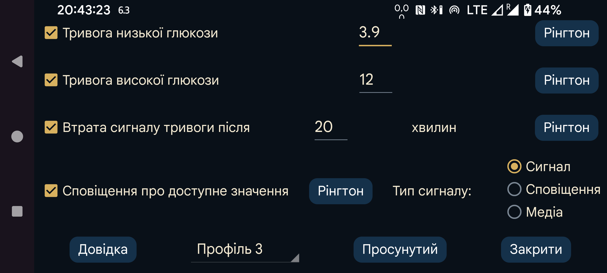

ar be de es fr hi it ja nl pl pt ru sv tr uk uz zh en

Потокові значення, отримані через Bluetooth, можна використовувати для встановлення тривог низького та високого рівня глюкози.
Значення, за якого або нижче якого має спрацювати сигнал.
Значення, за якого або вище якого має спрацювати сигнал.
Укажіть, через скільки хвилин має спрацювати сигнал, якщо через Bluetooth не отримано значення глюкози.
Сигнали припиняються за виконання будь-якої з таких умов:
— минула задана тривалість;
— торкнулися вікна з кривою;
— торкнулися сповіщення Juggluco в Android (на розблокованому пристрої);
— натиснули кнопку «Скасувати» у сповіщенні про сигнал Juggluco;
— торкнулися Плав. глюкоза .
Іноді датчик тимчасово припиняє роботу. Коли цей параметр увімкнено, ви отримаєте сповіщення після відновлення роботи, але лише якщо справді відкрили Juggluco й самі побачили відсутнє значення. Якщо прогалину помічено тільки у сповіщенні Juggluco або на циферблаті, «Сповіщення про доступне значення» не спрацює.
Для кожного сигналу можна вибрати Рінгтон й тривалість його відтворення.
Коли вибрано «Сигнал», Рінгтон для низького, високого рівня та втрати зв’язку отримує категорію звуку Сигнал . Це означає, що в налаштуваннях Android її гучність регулює повзунок будильника, а звук не вимикається в беззвучному режимі або режимі вібрації. Коли вибрано Сповіщення , на телефонах використовується гучність сповіщень, а на Samsung Galaxy Watch 4–7 — системна гучність. Для сповіщення про відновлення значення це використовується завжди. Коли вибрано Медіа , застосовується гучність медіа. На більшості телефонів звук категорії медіа чутно в режимі «Не турбувати», але якщо до телефона підключено навушники, сигнал перенаправляється в них. Категорію «Будильник» чути і в навушниках, і через звичайний динамік. Категорію «Сповіщення» в режимі «Не турбувати» не чути взагалі.
Укажіть, до якого Профіль належать ці налаштування. Так можна перемикатися між наборами параметрів сигналів і озвучення. Автоматичну активацію профілю в певний час можна налаштувати в розділі «Просунутий» → Розклади.
Меню «Просунутий»: «Тривога дуже низької глюкози», «Тривога дуже високої глюкози», «Тривога незабаром низької глюкози», «Тривога незабаром високої глюкози», а також «Розклади» для активації профілів.